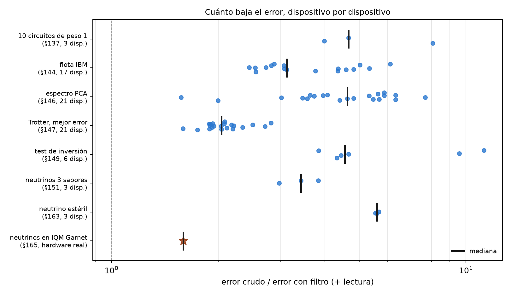
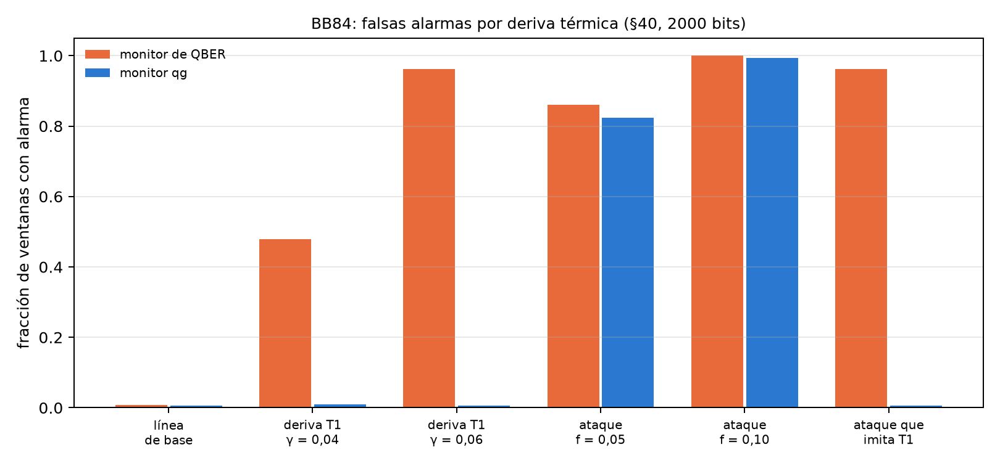

29 Las ventajas empíricas confirmadas
Después de veintiocho capítulos de comparaciones “sin qang y con qang”, este junta las que dieron un beneficio medible, con su tamaño, sus límites y de dónde viene cada cifra. El criterio para entrar es estricto: una ganancia medida en código o en una corrida pre-registrada, contra la misma acción sin la escala o sin el filtro, y con el caso en que deja de valer escrito al lado. Todos los factores se recalculan acá, dispositivo por dispositivo, desde los archivos guardados de las corridas. No se vuelve a simular nada. Lo que no pasó el criterio va al capítulo 30.
29.1 Desde la base: de dónde vienen las ventajas
Las ventajas del libro tienen dos orígenes, y conviene no mezclarlos:
- El filtro de peso (capítulos 20–25): si el circuito conserva el número de excitaciones, cada disparo con el peso equivocado tuvo un error y se descarta. Es verificación de simetría, una técnica conocida. La escala qang aporta el testigo (la lectura media del registro, cuyo valor ideal se sabe antes de correr) y la regla de cuándo conviene (capítulo 21).
- La escala misma (capítulos 18, 23, 26, 27): lecturas que separan cosas que la lectura cruda mezcla. La temperatura del error de lectura, el T1 del ruido unital, la deriva térmica de un ataque.
29.2 Restauración exacta bajo T1
Con el mismo T1 en todos los qubits, el filtro devuelve exactamente la lectura sin ruido en cada sector (capítulo 21, verificado a \(10^{-12}\) m-qg). En clasificación, las notas (§80) lo midieron en 60 corridas pareadas (5 semillas, 3 particiones, 4 conjuntos de datos), con predicciones registradas antes de correr:
- con el modelo de peso 1, entrenado sin ruido y leído bajo T1, qang recupera +2,5 puntos de precisión (intervalo de 95 %: +0,8 a +4,1), hasta la precisión exacta de 0,952;
- con el modelo de peso 2 recupera +16,5 puntos (+11,8 a +21,2), de 0,757 a 0,922;
- con desfase, +12,6 y +22,6 puntos;
- si se entrena con el ruido, la diferencia desaparece (+0,1 y −0,1 puntos): la ventaja es no tener que entrenar con el ruido, no una precisión mayor que la alcanzable.
Las cinco predicciones se cumplieron. Las cifras del índice (“+2,5 y +16,5 en 60 corridas”) están en §80, tal cual.
29.3 Menos error en las lecturas de dispositivos simulados
El script recalcula el factor de reducción del error (crudo sobre filtro más corrección de lectura) en cada dispositivo de cada corrida guardada:
| estudio | dispositivos | mínimo | mediana | máximo |
|---|---|---|---|---|
| 10 circuitos de peso 1 (§137) | 3 | 3,99 | 4,66 | 8,07 |
| flota IBM (§144) | 17 | 2,45 | 3,12 | 6,11 |
| espectro PCA (§146) | 21 | 1,57 | 4,63 | 7,67 |
| Trotter XY, mejor error (§147) | 21 | 1,59 | 2,04 | 2,82 |
| test de inversión (§149) | 6 | 3,84 | 4,55 | 11,24 |
| neutrinos de 3 sabores (§151) | 3 | 2,97 | 3,43 | 3,83 |
| neutrino estéril (§163) | 3 | 5,55 | 5,61 | 5,68 |
| neutrinos en IQM Garnet (§165, hardware real) | 1 | — | 1,59 | — |
- El filtro nunca empeoró el error en ninguno de los 74 casos (un mismo dispositivo simulado aparece en varios estudios). Bajó entre 1,6 y 11 veces.
- En hardware real ganó menos (1,59 veces): el chip era mejor que su modelo simulado (error crudo 0,062 contra 0,126), así que menos disparos salían del sector. El error que queda está dentro del sector, donde el filtro no ve.
- La flota de IBM, tomando el mejor entre filtro solo y filtro más lectura, da 2,4 a 9,0 veces (las notas: 2,4–8,9). El rango “2,7–3,6×” que anunciaba el índice no está en las notas: las cifras son las de esta tabla. Para el clasificador de §85 las notas dan 2,9–3,6 veces en el error de la lectura, con la precisión igual (0,933) con y sin qang.

29.4 Errores dentro del sector: el eco
Lo que el filtro no ve, el eco lo mide (capítulo 22). Con la red de peso 1 sobre 189 entradas y 1000 disparos, en cinco dispositivos simulados, las decisiones distintas de la red sin ruido son 15 sin qang, 7 con el filtro y 3 con el filtro más el eco, sobre 945 lecturas (§106). El eco quita entre 43 y 56 % del error del valor de decisión que deja el filtro. No sirve con entradas de margen estrecho, cuando el error filtrado ya está cerca de su ruido de disparo (§108).
29.5 Caracterización y control
Estas ventajas son de la escala misma, sin filtro (capítulo 27):
- Temperatura y lectura: el barrido con heraldo mide el error de lectura sin sesgo y la temperatura efectiva a 1 mK, donde la calibración estándar infla el error en \(p\cdot b\) y ve el qubit a 0 mK.
- Diagnóstico del T1 sin simulación clásica: la lectura media distingue T1 de ruido unital con 88 % de acierto con 100 disparos y ruido fuerte, contra 70–76 % de XEB y HOP, que además necesitan la distribución ideal. Con ruido realista nada distingue los dos sobre circuitos arbitrarios.
- Cuantización del control: una grilla pareja en qg baja la distancia de variación total al cargar una distribución en 43 de 45 casos (mediana 1,56 veces), y el peor error de probabilidad en un factor exacto \(\pi/2\). Pierde en fidelidad cerca de los polos.
29.6 Neutrinos: mitigación sin circuitos extra
Las oscilaciones de neutrinos en un circuito conservan el peso, así que el filtro se aplica sin agregar ningún circuito. Con tres sabores (§151), el error baja 3,4 veces en la mediana de tres dispositivos simulados (el índice decía 3 veces); con un neutrino estéril (§163), 5,6 veces, y la caída de supervivencia aparece en la energía correcta en los tres. En IQM Garnet (§165), con hardware real, el filtro baja el error 1,59 veces y devuelve el máximo de oscilación a 2,6 GeV (exacto 2,63), donde la lectura cruda lo ponía en 0,8 GeV. Es la única de estas ventajas confirmada en hardware.
29.7 BB84: menos falsas alarmas ante la deriva térmica
En BB84, la suma \(qg(0)+qg(1)\) de los estados enviados en Z es un testigo de T1: la relajación sólo produce errores 1→0, y un ataque de interceptar y reenviar produce errores simétricos (notas §40, capítulo 17). Con ventanas de 2000 bits y 1 % de falsas alarmas en la línea de base:
| escenario | monitor de QBER | monitor qg |
|---|---|---|
| línea de base | 0,007 | 0,006 |
| deriva T1, \(\gamma\) 0,02 → 0,04 | 0,478 | 0,009 |
| deriva T1, \(\gamma\) 0,02 → 0,06 | 0,962 | 0,006 |
| interceptar y reenviar, \(f=0{,}05\) | 0,861 | 0,823 |
| interceptar y reenviar, \(f=0{,}10\) | 1,000 | 0,994 |
| ataque que imita al T1 | 0,962 | 0,006 |
El monitor qg detecta el ataque igual que el de QBER y no salta cuando sólo empeora el T1 de la memoria, donde el de QBER salta en 48–96 % de las ventanas. El precio está escrito: un atacante que imita al T1 pasa inadvertido para el monitor qg y no para el de QBER. Los dos son complementarios, y no hay ganancia de seguridad: la tasa de clave cae igual en los dos casos.

29.8 Lo que queda pendiente
De todas estas ventajas, sólo la de neutrinos está confirmada en hardware real, una vez, con 300 disparos por circuito. Las que más conviene llevar a un dispositivo son la caracterización con heraldo (la población térmica no existe en los simuladores) y el filtro en un circuito de varias excitaciones.
29.9 Sin qang y con qang
| ventaja | sin qang | con qang | tamaño | dónde deja de valer |
|---|---|---|---|---|
| precisión bajo T1 sin reentrenar | 0,928 / 0,757 (pesos 1 / 2) | 0,952 / 0,922 | +2,5 / +16,5 puntos | con T1 desigual pierde ≤ 1 punto; entrenando con ruido, ninguna |
| error de las lecturas (simulado) | crudo | filtro + lectura | 1,6 a 11 veces, nunca peor | error dentro del sector |
| error en hardware real | 0,062 | 0,039 | 1,59 veces | chips mejores que su modelo ganan menos |
| decisiones de un clasificador | 15 de 945 distintas | 3 con filtro y eco | 5 veces menos | margen estrecho (§108) |
| lectura y temperatura | \(e_{01}\) inflado, 0 mK | sin sesgo, a 1 mK | — | necesita medición a mitad de circuito |
| diagnóstico del T1 | 0,70–0,76 con simulación ideal | 0,88 sólo con conteos | +12–18 puntos | ruido realista: azar |
| cargar distribuciones | grilla en \(\theta\) | grilla en qg | 43 de 45, mediana 1,56 veces | fidelidad cerca de los polos |
| alarmas en BB84 | 48–96 % de falsas alarmas por deriva | 0,6–0,9 % | — | un ataque que imita al T1 |
Balance. Las ventajas son reales y medidas, pero de dos clases. Las del filtro son las más grandes (hasta 11 veces en simulación) y pertenecen a la verificación de simetría, conocida; qang aporta el testigo y la regla. Las de la escala misma son más chicas y más propias: separar temperatura de lectura, T1 de ruido unital y deriva de ataque. Sólo una ventaja pasó por hardware real, y ahí ganó menos que en simulación. Esa es la cifra que hay que mirar primero.
29.10 En código
import json
d = json.load(open("examples/data/iqm_neutrino_qg_run.json"))
d["raw_error"] / d["filtered_error"] # 1,59: el filtro en IQM Garnet, hardware real
d["kept"] # 0,88 de los disparos conservados29.11 Resumen
- Bajo T1 igual, qang recupera la precisión sin ruido sin reentrenar: +2,5 puntos con peso 1 y +16,5 con peso 2 en 60 corridas.
- El filtro baja el error de las lecturas entre 1,6 y 11 veces en 74 casos de dispositivos simulados, sin empeorarlo nunca; en hardware real, 1,59 veces.
- El eco lleva las decisiones erróneas de 15 a 3 sobre 945 lecturas.
- La escala misma separa temperatura de error de lectura, T1 de ruido unital y deriva térmica de un ataque en BB84.
- Cada ventaja tiene escrito dónde deja de valer; el capítulo 30 junta los resultados negativos.
Notas bibliográficas
La restauración bajo T1 es una verificación de simetría (Bonet-Monroig et al. 2018; McArdle et al. 2019); el eco, Hahn (1950). La resolución de los neutrinos usa los parámetros de Esteban et al. (2020), y el monitor BB84, el protocolo de Bennett y Brassard (2014) y la prueba de Shor y Preskill (2000). Las notas de investigación numeradas (§) que cita el capítulo y los scripts que lo verifican están en el repositorio (Monteverde 2026a); la definición de la unidad qang, en Monteverde (2026b).